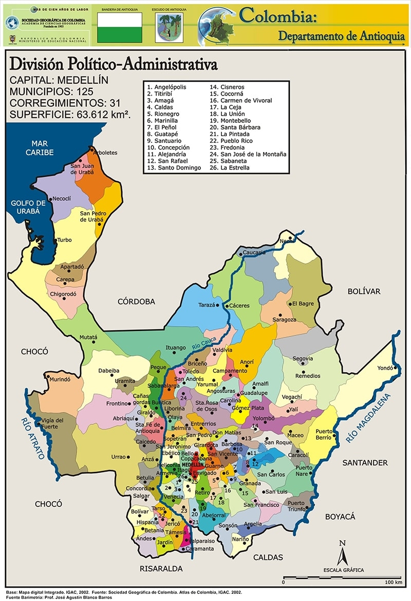

DEPARTAMENTO DE ANTIOQUIA
MAPA DE ANTIOQUIA

HISTORIA DE ANTIOQUIA
La historia de Antioquia se caracteriza por su espíritu independiente y su desarrollo económico. En la época precolombina, estaba habitada por indígenas como los tahamíes y nutabes. Con la llegada de los españoles en el siglo XVI, se fundó Santa Fe de Antioquia, destacándose por la minería del oro.
Durante la independencia, los antioqueños apoyaron la causa patriota. En el siglo XIX, la Colonización Antioqueña fue clave, ya que sus habitantes expandieron la agricultura y el cultivo del café a nuevas regiones.
En el siglo XX, Medellín se convirtió en la capital industrial de Colombia, destacándose por la industria textil. Aunque la región sufrió por el narcotráfico en las décadas de 1980 y 1990, Antioquia se ha reinventado y hoy es un referente de innovación y desarrollo en Colombia.
ECONOMIA DE ANTIOQUIA
La economía de Antioquia es una de las más dinámicas de Colombia, caracterizada por su diversidad y desarrollo industrial. Tradicionalmente, ha sido un centro importante de minería, especialmente de oro, desde la época colonial. En el siglo XX, Medellín se convirtió en un gran centro industrial, destacándose en la industria textil, confecciones y producción de bienes manufacturados.
El sector agrícola también es clave, con la producción de café, flores, plátano y cacao, siendo el café uno de los productos más importantes de exportación. Antioquia también es líder en la producción de banano*, particularmente en la región de Urabá.
En las últimas décadas, el departamento ha diversificado su economía, impulsando sectores como el comercio, los servicios financieros, y el turismo, además de ser un referente en innovación tecnológica. Medellín ha sido reconocida internacionalmente por su transformación urbana y su apuesta por la tecnología y el emprendimiento.
En resumen, la economía de Antioquia es un motor clave en el desarrollo nacional, con un fuerte enfoque en la industria, la agricultura y la innovación.
CULTURA DE ANTIOQUIA
La cultura de Antioquia está marcada por el espíritu emprendedor, la independencia y el trabajo duro de sus habitantes, conocidos como "paisas". Se caracteriza por una rica mezcla de tradiciones indígenas, españolas y africanas.
La región es famosa por su música tradicional, como el bambuco y el pasillo, así como por su silletería, tradición que se celebra cada año en la Feria de las Flores de Medellín, donde desfilan campesinos con grandes arreglos florales.
La gastronomía antioqueña es emblemática en Colombia, con platos como la bandeja paisa, el sancocho antioqueño y la arepa. También destaca su artesanía, con productos como el sombrero aguadeño y el carriel.
El antioqueño tiene un fuerte sentido de pertenencia y orgullo por su región, lo que se refleja en su hospitalidad, su amor por la tradición y su gran capacidad de innovación, características que han hecho de Medellín una ciudad reconocida internacionalmente por su transformación cultural y social.
TURISMO DE ANTIOQUIA
El turismo en Antioquia es muy diverso y ha crecido significativamente en las últimas décadas, ofreciendo una mezcla de naturaleza, cultura, historia y modernidad. Medellín, la capital, es uno de los destinos turísticos más importantes, conocida por su clima templado, sus festivales, como la Feria de las Flores, y su transformación urbana, con lugares emblemáticos como el Museo de Antioquia, el Parque Arví y la Comuna 13, famosa por su arte urbano y recorridos de transformación social.
Antioquia también es un destino popular para los amantes de la naturaleza y el ecoturismo. Zonas como Guatapé son famosas por la Piedra del Peñol, una gigantesca roca que ofrece vistas impresionantes del embalse de Guatapé. Además, el Suroeste antioqueño, con municipios como Jardín y Jericó, atrae a visitantes por su arquitectura colonial, paisajes montañosos y el cultivo de café.
El turismo rural también es muy popular, con fincas cafeteras y rutas que permiten a los turistas conocer el proceso de producción del café. En la región de Urabá, se encuentran playas y paisajes tropicales, ideales para quienes buscan disfrutar del mar Caribe.
Antioquia ofrece además turismo de aventura, con actividades como senderismo, parapente, rafting y ciclismo, aprovechando su geografía montañosa y sus ríos.
En resumen, el turismo en Antioquia combina naturaleza, cultura y modernidad, haciendo de esta región uno de los destinos más completos y atractivos de Colombia.